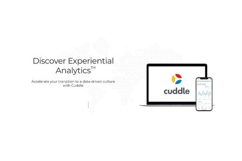

Cuddle.AI is Fractal Analytics' natural-language business analytics product. Business users ask questions about their data in plain English and get answers back as interactive visuals, instead of working through static reports and pivot tables. Users can also mark the insights they care about and be alerted automatically to anomalies, trends and patterns in them.
I joined to build the Android application, developing new modules and enhancements, and took on Couchbase as a second responsibility: Sync Gateway configuration, document consistency, and resolving sync and replication issues as they came up. The work taught me MVP architecture, reactive programming and Android's LiveData and ViewModel patterns in production.
In my first month I took part in the company's Ground Zero hackathon. My team built a dark theme for the Android app, which I implemented, and I integrated Cuddle's actions with Siri and Google Assistant. We won first prize.
Details
- Role
- Android development and Couchbase
- Dates
- December 2018 to August 2021
- Clients
- Mondelez (India, Indonesia and the Philippines), RB Health, CMA CGM
- Links
- cuddle.ai · Google Play